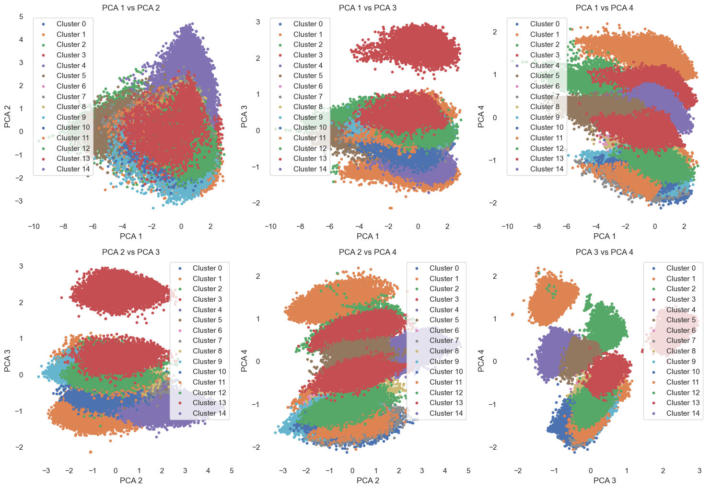
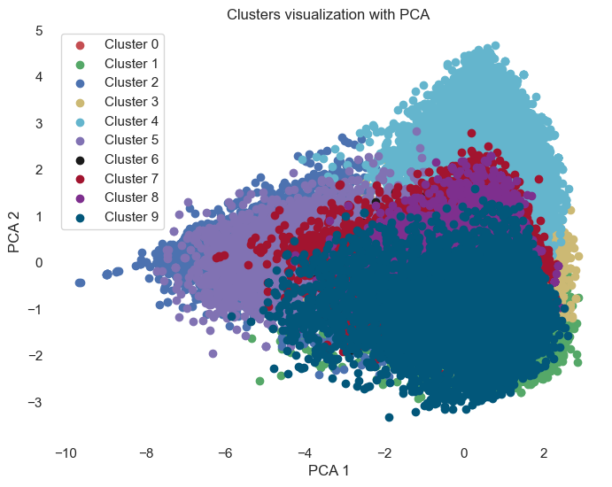
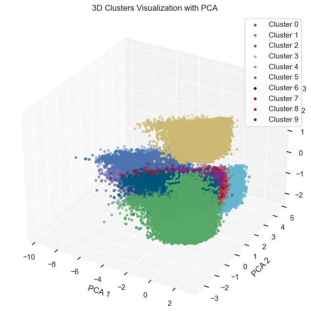
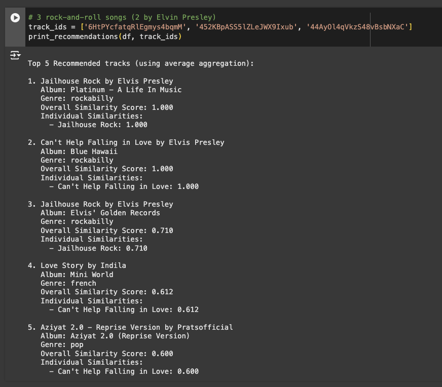
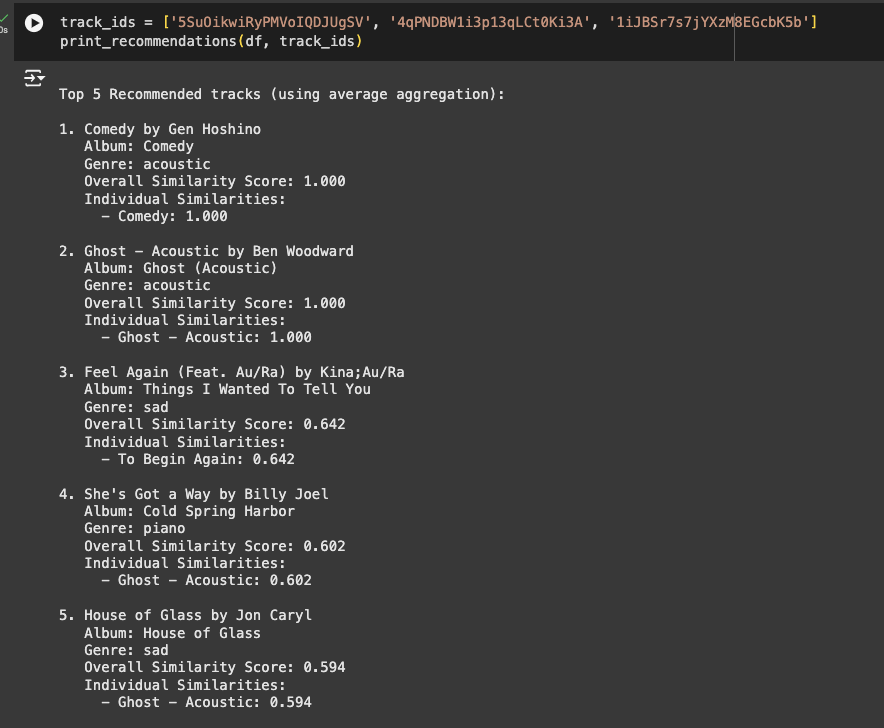
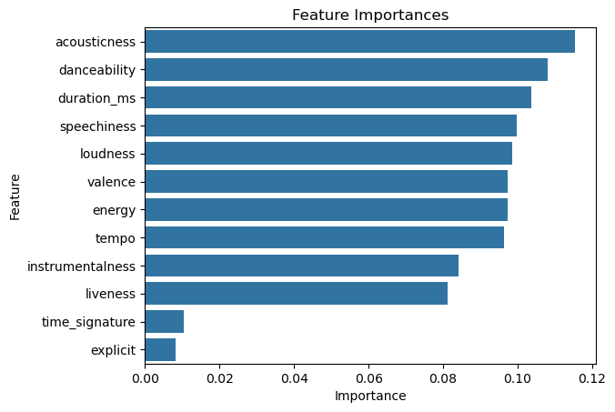
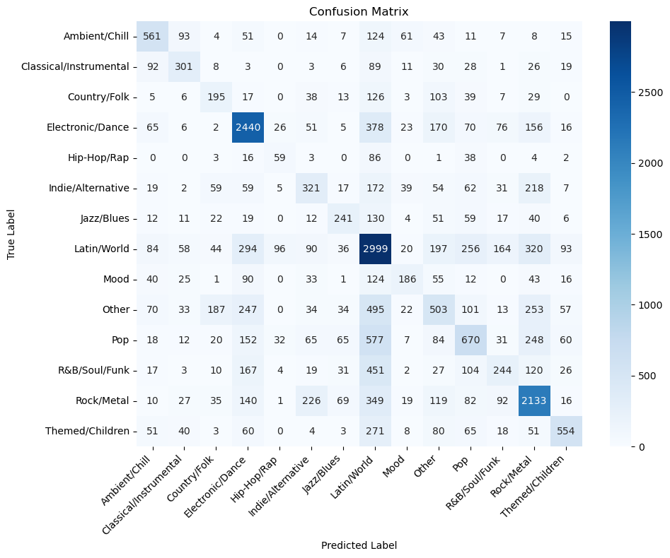

Final Report
Introduction
Our team aims to create a tool to classify songs into genres while also recommending songs to users based on their listening history. Previous work has been done in this domain, such as a Deep Learning model which uses spotify’s explore/exploit strategy to achieve 80% accuracy when making recommendations [1]. Further, work has also been done to achieve 60% accuracy when classifying music genres with traditional ML methods [2]. Our goal is to build off this previous work, and create models capable of performing equally as well or better.
We will be using a dataset with over 100,000 songs in it with features ranging from artist_name to danceability and loudness. The dataset can be found here: Kaggle Dataset
Problem
Music classification and recommendation is an important element of modern music streaming platforms; however, it remains a time consuming endeavor to classify and build your own playlists. To automate this process and tailor to individual user preferences requires sophisticated machine learning algorithms that we are looking to build on. By enhancing genre classification and refining song recommendation and playlist building using machine learning algorithms, music exploration will become a seamlessly efficient task.
Methods
Data Processing
We will first clean the data to ensure there are no missing data points. As each song is different even though they are composed by the same artists we can’t replace the data. The same artist could make music in different genres so we will remove the null data.
As we will be classifying songs by genre and genre is given as a string in the dataset we will need to convert the genres to numerical data for our decision tree model. We will be using one-hot encoding to convert strings to numbers. The explicit column in the dataset is given as true and false values which we will convert to binary 1 and 0, respectively. Also, we will drop some columns that we deem unnecessary for classification due to little efficacy.
For the numerical data that isn’t binary we have in our dataset we will be normalizing them using StandardScaler to ensure they are all in the same range of values. This is important for some of our algorithms like random forest/decision tree which will need the data to be more uniform for better performance.
We will also be binning some of the data such as tempo, loudness, “speechiness”, etc. We will be placing the numerical values in three bins low, medium, and high given by numerical values 0, 1, and 2.
Machine Learning
We will use K-means clustering, a recommendation algorithm, and a decision-tree model to classify songs into specific genres or attributes. K-means, which is well-suited for our preprocessed categorical data, will be used for clustering songs with similar characteristics such as tempo and energy while our recommendation algorithm will be designed to learn from past listening history and preferences to enhance our playlist or song recommendations. The motivation for a decision tree is two-fold in that it will allow us to classify songs based on their respective attributes using our binarized features while also potentially reducing our feature dimensionality.
Discussion of Results
Our plan was to evaluate the performance of our ML models using accuracy (how well the model predicts the correct genre for a song) after assigning clusters a label with the most frequent genre. We can also find the silhouette score to evaluate the quality of our clusters, and use cross-entropy loss or log-loss to evaluate our recommendation [3]. Our main project goal is to accurately classify songs into their respective genres based on features in our dataset (for example, duration and tempo). We also plan on creating a recommendation model to generate playlists or suggest songs based on what songs you like or have listened to in the past. We aim to use k-means clustering and decision trees to improve or at least equal upon the 60% accuracy that has been previously achieved in previous studies. We also aim to have a silhouette score of around 0.4-0.5 as there are many dimensions in our dataset, and we will try to minimize our cross entropy loss for our recommendation model (<0.5).
K-means
Visualization



After visualizing our data by looking at the first 4 principal components compared pairwise, we can see some clear decision boundaries for each of our clusters in these multiple dimensions. While some clusters seem to have some common overlap (which suggests that a lot of these data points share similarities across clusters within those principal components), looking at other dimensions reveals that there is actually some distance between the clusters. While reducing to four dimensions allows us to visualize the data better and see these clear boundaries, we may have lost some of the original variance in the data that existed in the higher dimensions.
We found that our silhouette score, which can range from -1 to 1, is 0.45211…. A lower silhouette score means that points are blending in with the clusters around it, and it is hard to tell points from their own cluster vs. their neighboring clusters. A higher silhouette score indicates that clusters are distinct with not much overlap. Our score of ~0.452 shows that our clustering has a decent degree of separation among clusters, though there is a moderate amount of overlapping between clusters that causes points to be hard to distinguish from neighboring clusters. Music data doesn’t and shouldn’t fall exactly into really distinct clusters, so we suspect this silhouette score to be sensical as many songs in our dataset can have similar features even across categories.
Analysis
In both the 2D and 3D PCA visualizations, some clusters show strong separation, particularly along different principal components (e.g., cluster 3 and cluster 4 in PCA1 vs PCA2). While some clusters appear to overlap in some 2D plots, note that the PC axis space is a higher dimension and thus allows for more significant separation along different axes. The 3D plot conveys this clearer separation as certain clusters appear to form more distinct layers along different PCs. Note that the less strong boundaries in the 2D plots indicate that those components/features may not capture distinct characteristics for each cluster. Our Silhouette score of 0.452 indicates moderate to strong performance, particularly for practical applications. This score also aligns with the separated decision boundaries and slight overlaps along some plots in the visualizations.
Next Steps
To improve upon this model, we would consider improved and more nuanced feature engineering using different music factors which could enhance the feature separation. We could also apply decision trees to prune certain features that are not important before using PCA. We might also use t-SNE or UMAP for observing potentially more complex and nonlinear structures and relations. We can also explore Elbow pruning more to find the perfect choice of clusters and PCA components. We can also incorporate and experiment with different clustering algorithms such as GMM and DBSCAN. We also plan on continuing with our other originally planned ML models, such as decision tree models.
K-Nearest Neighbors (KNN) for Music Recommendations
For the music recommendation task, we implemented a K-Nearest Neighbors (KNN) model that uses track features such as popularity, danceability, energy, loudness, speechiness, acousticness, instrumentalness, liveness, valence, and tempo to compute similarities between tracks. We applied this model to recommend tracks based on the closest neighbors in the feature space, utilizing the Euclidean distance metric.
Overview of the KNN Model
The KNN model works by identifying the most similar tracks to a given set of input tracks. We used the StandardScaler to normalize the feature values before applying the KNN algorithm, ensuring that all features contribute equally to the similarity calculation.
In this section, we tested the recommendation model using centroid aggregation, where the average feature vector of the input tracks is used to compute the similarity scores for potential recommendations. We also used the average aggregation method to combine the similarity scores from multiple input tracks.
Example Music Recommendations
For a given set of input tracks, the model calculates the similarity to other tracks in the dataset and provides the top recommendations. Below are the top 5 recommended tracks based on their similarity to a given input set:


Analysis of the Results
The KNN model effectively identified tracks with high similarity scores, suggesting that the model was able to capture musical features that closely match the input tracks. As seen in the recommendations for the image on the left, the KNN model recommends songs similar to the 3 rock-n-roll songs in the input. In this example, two of the input songs are by Elvis Presley, so the algorithm prefers to recommend Elvis Presley first, as indicated by the top two song recommendations. In the example on the right, three acoustic versions of songs are inputted, and the algorithm prefers to recommend acoustic versions of different songs or songs in the acoustic genre.
The similarity score, which is calculated as 1 / (1 + distance), indicates how close each recommended track is to the input tracks. A higher similarity score means the track is more similar to the input in terms of the features used by the model.
Next Steps and Improvements
While the current KNN-based model provides useful recommendations, there are several steps we can take to improve its performance:
- Feature Engineering: Exploring additional or different features could potentially improve the quality of recommendations. For example, incorporating metadata or lyrics-related features might enhance the musical feature representation.
- Experimenting with KNN Variants: We can also experiment with different distance metrics, such as cosine similarity, to see if it better captures the relationships between tracks in the feature space.
By continuously refining the model and expanding the feature set, we aim to provide more personalized and accurate music recommendations in the future.
Random Forest Classifier
In our proposal, we planned to use a Decision Tree model to perform supervised learning on our dataset. Ultimately, our goal was to create a model capable of multi-class classification of song genre. After our class lecture on Random Forests, we decided to implement a Random Forest model since it capitalizes on the capability of Decision Trees while also incorporating bagging to reduce potential overfitting (a significant risk when using decision trees). Our Random Forest model achieved an overall accuracy of 50%. At first glance, 50% accuracy is not too impressive. However, considering that there are 14 different classes in our dataset, 50% accuracy is significantly better than the accuracy of random guessing which would be around 7%. Below you can see a tabular representation of the models performance over the different classes:
| Genre | Precision | Recall | F1-Score | Support |
|---|---|---|---|---|
| Ambient/Chill | 0.54 | 0.56 | 0.55 | 999 |
| Classical/Instrumental | 0.49 | 0.49 | 0.49 | 617 |
| Country/Folk | 0.33 | 0.34 | 0.33 | 581 |
| Electronic/Dance | 0.65 | 0.70 | 0.67 | 3484 |
| Hip-Hop/Rap | 0.26 | 0.28 | 0.27 | 212 |
| Indie/Alternative | 0.35 | 0.30 | 0.32 | 1065 |
| Jazz/Blues | 0.46 | 0.39 | 0.42 | 624 |
| Latin/World | 0.47 | 0.63 | 0.54 | 4751 |
| Mood | 0.46 | 0.30 | 0.36 | 626 |
| Other | 0.33 | 0.25 | 0.28 | 2049 |
| Pop | 0.42 | 0.33 | 0.37 | 2041 |
| R&B/Soul/Funk | 0.35 | 0.20 | 0.25 | 1225 |
| Rock/Metal | 0.58 | 0.64 | 0.61 | 3318 |
| Themed/Children | 0.62 | 0.46 | 0.53 | 1208 |
Visualizations
Below is a plot of the feature importance determined from the Random Forest classifier. As you can see, the most important feature is "acousticness". However, all features other than "time_signature" and "explicit" are similarly important. This makes sense since all genres contain explicit songs and time signatures vary greatly even within genres.

Further, we have plotted the confusion matrix to easily visualize how our classifier performs across different classes. An important thing to note here is that the majority class such as Latin/World and Electronic/Dance perform significantly better than minority classes. This could be a coincidence, but this is highly unlikely. We tried explicitly weighting classes within the Random Forest classifier, but this did not fix the issue. In the future, we could attempt techniques such as SMOTE to create synthetic data which would balance our data set.

Analysis
Our Random Forest classifier achieved an accuracy of 50%, which is signifcantly better than random guessing (14 classes leads to a 7% accuracy if randomly guessing). Further, our classifier achieved the highest F1 scores on the following genres: Electronic/Dance, Rock/Metal, and Ambient/Chill. These results make intuitive sense since these genres all offer very distinct musical features. Electronic music is uniquely fast, rock music is uniquely loud, and ambient music is uniquely quiet and acoustic.Next Steps
Like stated previously, our Random Forest Classifier performed significantly better for majority classes. In the future, we would like to perform analysis to determine if this was a coincidence or if it was due the the unbalanced trainign datat. To perform thsi experiment, we could under sample the majority classes to create balanced training data. If we dtermine it is not a coicidence, we could perform SMOTE to create snythethic training data. Hopefully, balanced training data would lead to a more balanced classifier accross different classes.
Also, a more exhaustive grid search could be performed to determine optimal hyper-paramters. We performed a grid search, but due to limited compute resources we were only able to test abour 4 different values for each signicant hyper-parameter.